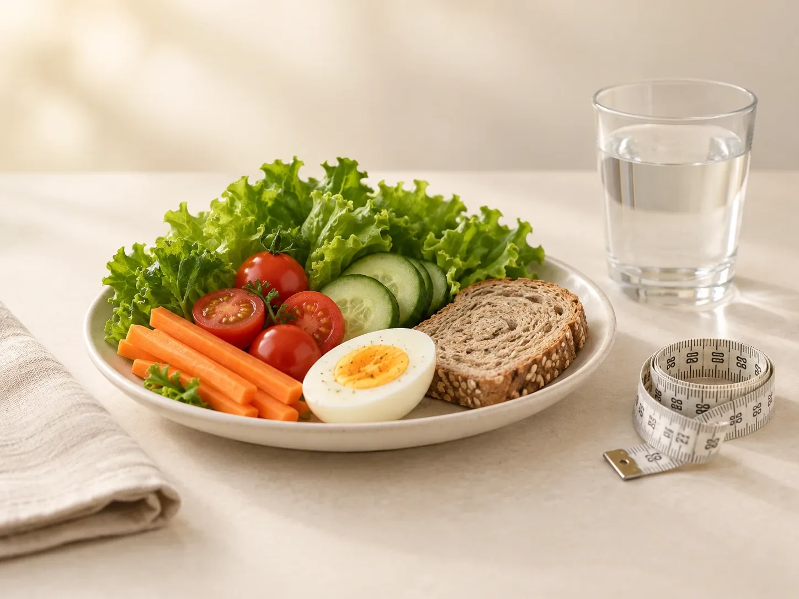

СоловьеваЯна Алексеевна
Врач-эндокринолог
Сахарный диабет, ожирение, заболевания щитовидной железы и остеопороз; наблюдение во время беременности
- Опыт
- более 16 лет
Самочувствие и лечение
Когда клетки хуже отвечают на инсулин: лишний вес на животе, тяга к сладкому, усталость после еды. Диагностика и лечение у эндокринолога.
Инсулинорезистентность выявляет и лечит эндокринолог: по жалобам, осмотру и анализам. Приём стоит 5 800 ₽ и длится 60 минут.

Инсулинорезистентность – это состояние, при котором клетки тела хуже отвечают на инсулин. Инсулин помогает глюкозе перейти из крови в клетки. Когда чувствительность к нему снижена, поджелудочная железа вырабатывает больше инсулина, чтобы удержать сахар в норме. Выявляет и лечит инсулинорезистентность эндокринолог в клинике 8.0.8 в Москве, у метро «Римская». Направление не нужно, записаться можно ежедневно с 9:00 до 21:00.
Долгое время сахар крови остаётся нормальным, а самочувствие меняется незаметно. Но избыток инсулина мешает расходовать жир, особенно на животе, усиливает голод и тягу к сладкому. Со временем растёт риск преддиабета, сахарного диабета 2 типа, повышенного давления, болезней сердца и сосудов.
С инсулинорезистентностью можно работать. Чувствительность к инсулину меняется вместе с питанием, движением, сном и весом. Эндокринолог помогает понять, с чем связано нарушение, и составить план, который реально выполнить. Если нужны лекарства, их назначает врач.
Анализы назначает врач, их цены на странице «Цены на анализы».
На приёме врач объяснит:
Одного анализа «на инсулинорезистентность» нет. Её оценивают по нескольким показателям и всегда вместе с осмотром. Чаще всего врач назначает глюкозу и инсулин натощак. Иногда добавляют гликированный гемоглобин, липидный профиль или глюкозотолерантный тест с сахарной нагрузкой.
Индекс HOMA-IR не отдельный анализ, а расчёт. В формулу подставляют глюкозу и инсулин натощак из одной пробы крови. Чем выше индекс инсулинорезистентности, тем больше инсулина нужно организму, чтобы удержать обычный уровень сахара.
Норму индекса смотрите на бланке своей лаборатории: границы зависят от метода. Инсулин к тому же меняется после еды, при стрессе и от некоторых лекарств. Поэтому кровь сдают строго натощак, а результат оценивает врач, а не таблица из интернета.
У женщин инсулинорезистентность часто заметна по циклу и коже. Избыток инсулина подталкивает яичники вырабатывать больше мужских гормонов. Отсюда нерегулярный цикл, акне, жирная кожа, рост волос на лице и поредение волос на голове. Такое сочетание бывает при синдроме поликистозных яичников.
Второй важный период приходится на перименопаузу и менопаузу. Когда эстрогенов становится меньше, жир чаще откладывается на животе, а чувствительность к инсулину снижается. Поэтому после 40–50 лет обмен веществ стоит проверить, даже если вес почти не изменился.
В основе лечения лежит образ жизни. Это не строгая диета на месяц, а привычки, которые можно сохранить надолго. Даже умеренное снижение лишнего веса обычно повышает чувствительность к инсулину.
Если этого недостаточно, эндокринолог может назначить лекарства. Какие и на какой срок, решает только врач. Диету при инсулинорезистентности под ваши привычки поможет составить диетолог 8.0.8, стоимость его приёма уточнит администратор.
Инсулинорезистентность лечат планово. Но если появились признаки очень высокого сахара, вызывайте скорую помощь по номеру 103 или 112:
Врач-эндокринолог
Сахарный диабет, ожирение, заболевания щитовидной железы и остеопороз; наблюдение во время беременности
Приём эндокринолога в 8.0.8 стоит 5 800 ₽ и длится 60 минут. Анализы назначает врач, их цены на странице «Цены на анализы».
Позвоните по телефону +7 (938) 099-30-09 или нажмите «Записаться» на этой странице: администратор подберёт удобное время и подскажет, как подготовиться. Клиника работает ежедневно с 9:00 до 21:00. Направление не нужно.
В клинике 8.0.8: Москва, ул. Сергия Радонежского, 15–17, стр. 2, этаж 1. Рядом станции метро «Римская» и «Площадь Ильича».
Клетки плохо «слышат» инсулин, и организму приходится вырабатывать его больше, чтобы удержать сахар в норме. Это ещё не диабет, но повод заняться обменом веществ.
Эндокринолог. С питанием помогает диетолог. Если непонятно, с чего начать, можно прийти к терапевту: приём терапевта тоже 5 800 ₽.
Обычно глюкозу и инсулин натощак, по ним считают индекс HOMA. Врач может добавить гликированный гемоглобин, липидный профиль или глюкозотолерантный тест.
Границы зависят от лаборатории и указаны на бланке. Даже результат в пределах нормы врач оценивает вместе с весом, талией, давлением и другими анализами.
Утром натощак, через 8–12 часов после еды. Накануне без алкоголя и тяжёлых тренировок. Лекарства сами не отменяйте, а скажите о них врачу.
Чувствительность к инсулину меняется вместе с питанием, движением, сном и весом. Насколько и как быстро, зависит от причины и от того, удаётся ли сохранить новые привычки. Врач следит за показателями на контрольных визитах.
Одной диеты для всех нет. Обычно советуют регулярное питание, меньше сладкого и сладких напитков, больше овощей, белка и цельных круп. Подробный план под ваши привычки составит диетолог.
Имеются противопоказания. Необходима консультация специалиста.